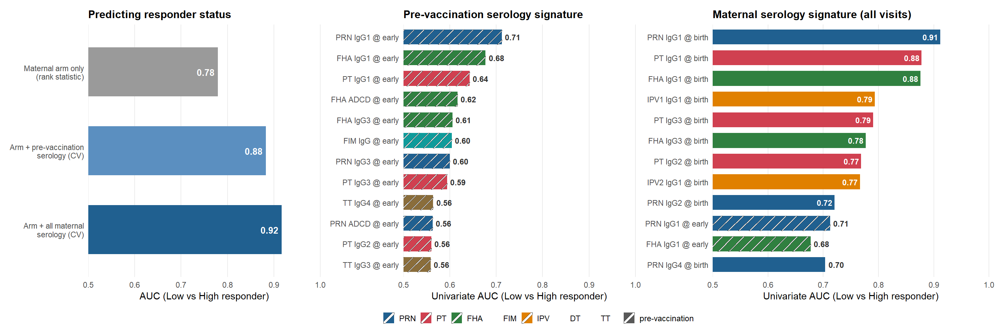

Main figure (UNCHANGED from rev1)
Everything in this section is identical to
09_figure4_three_panel_rev.Rmd; it is reproduced so the
file is self-contained. The interval analysis does not
change these three panels — they are the headline arm/serology result
computed by the Phase-08 engine.
RESP_FEATS <- params$responder_features
MAT_VIS <- params$maternal_visits
mat_cls <- build_maternal_responder_class(
data_raw, MAT_VIS, RESP_FEATS,
breadth_thresh = params$breadth_thresh, has_cluster = has_cluster)
arm_tbl <- subject_maternal_arm(data_raw)
.excl_anti <- { av <- unique(as.character(data_raw$feature))
av[sub("_.*$", "", toupper(av)) %in% c("ACT", "PENTAMER")] }
.excl <- union(RESP_FEATS, .excl_anti)
W_all <- build_maternal_serology_matrix(data_raw, MAT_VIS, exclude_feats = .excl,
min_coverage = params$min_coverage)
W_base <- build_maternal_serology_matrix(data_raw, params$baseline_visit,
exclude_feats = .excl, min_coverage = params$min_coverage)
su_all <- serology_univariate_auc(W_all, mat_cls)
su_base <- serology_univariate_auc(W_base, mat_cls)data_lr <- merge(mat_cls[, c("subject_accession", "responder")], arm_tbl, by = "subject_accession")
data_lr <- data_lr[data_lr$arm_name %in% c("TdaP", "TT"), , drop = FALSE]
arm_auc <- auc_binary(as.numeric(data_lr$arm_name == "TdaP"), data_lr$responder)
cv_base <- cv_all <- NA_real_
if (has_glmnet) {
en_base <- elastic_net_signature(W_base, mat_cls, arm_tbl = arm_tbl,
alpha = params$en_alpha, nfolds = params$en_folds, seed = params$seed)
en_all <- elastic_net_signature(W_all, mat_cls, arm_tbl = arm_tbl,
alpha = params$en_alpha, nfolds = params$en_folds, seed = params$seed)
if (isTRUE(en_base$ok)) cv_base <- en_base$cv_auc
if (isTRUE(en_all$ok)) cv_all <- en_all$cv_auc
} else { cv_base <- 0.883; cv_all <- 0.918
cat("> *glmnet not installed — using the Table C2 CV-AUC values (0.88 / 0.92).*\n\n") }
left_df <- data.frame(
label = c("Maternal arm only\n(rank statistic)",
"Arm + pre-vaccination\nserology (CV)",
"Arm + all maternal\nserology (CV)"),
auc = c(arm_auc, cv_base, cv_all), kind = c("arm", "base", "all"), stringsAsFactors = FALSE)
left_df$label <- factor(left_df$label, levels = rev(left_df$label))ANTIGEN_COL <- c(PRN = "#206090", PT = "#d04050", FHA = "#308040",
FIM = "#0f9b9b", IPV = "#e08000", DT = "#7050a0",
TT = "#8a6d3b", DEFAULT = "#9a9a9a")
LEFT_COL <- c(arm = "#9a9a9a", base = "#5b8fc0", all = "#206090")
VISIT_PRETTY <- c(PregEarly = "early", MatBirth = "birth")
pretty_feature <- function(f) {
base <- sub("@.*$", "", f); visit <- sub("^.*@", "", f)
vp <- ifelse(visit %in% names(VISIT_PRETTY), VISIT_PRETTY[visit], visit)
paste0(gsub("_", " ", base), " @ ", vp)
}
prep_features <- function(su, keep = NULL, top_n = NULL, baseline_visit = params$baseline_visit) {
su$base_feature <- sub("@.*$", "", su$feature); su$visit <- sub("^.*@", "", su$feature)
cls <- classify_feature(unique(su$base_feature))
su <- dplyr::left_join(su, cls, by = c("base_feature" = "feature"))
if (!is.null(keep)) { su <- su[match(keep, su$feature), , drop = FALSE]
su <- su[!is.na(su$feature), , drop = FALSE]
} else { su <- su[order(-su$auc), , drop = FALSE]; if (!is.null(top_n)) su <- utils::head(su, top_n) }
su$antigen <- sub("^IPV[0-9]+$", "IPV", su$antigen)
su$antigen <- ifelse(su$antigen %in% names(ANTIGEN_COL), su$antigen, "DEFAULT")
su$prevax <- su$visit == baseline_visit; su$plabel <- pretty_feature(su$feature)
su$plabel <- factor(su$plabel, levels = rev(su$plabel)); su
}
use_pattern <- requireNamespace("ggpattern", quietly = TRUE)
signature_panel <- function(df, title, show_legend = FALSE) {
ANT_BREAKS <- c("PRN","PT","FHA","FIM","IPV","DT","TT")
fill_guide <- if (show_legend) guide_legend(order = 1, nrow = 1) else "none"
mark_guide <- if (show_legend) guide_legend(order = 2, nrow = 1) else "none"
p <- ggplot(df, aes(auc, plabel, fill = antigen))
if (use_pattern) {
p <- p + ggpattern::geom_col_pattern(aes(pattern = prevax), width = 0.72, colour = NA,
pattern_fill = "white", pattern_angle = 45, pattern_density = 0.12,
pattern_spacing = 0.03, pattern_size = 0.05) +
ggpattern::scale_pattern_manual(values = c(`TRUE` = "stripe", `FALSE` = "none"),
breaks = TRUE, labels = c(`TRUE` = "pre-vaccination"), name = NULL, guide = mark_guide)
} else {
p <- p + geom_col(aes(colour = prevax), width = 0.72, linewidth = 0.6) +
scale_colour_manual(values = c(`TRUE` = "grey15", `FALSE` = NA),
breaks = TRUE, labels = c(`TRUE` = "pre-vaccination"), name = NULL, guide = mark_guide)
}
df$inside <- df$auc >= 0.72
p + geom_text(data = df[df$inside, , drop = FALSE], aes(label = sprintf("%.2f", auc)),
hjust = 1.15, colour = "white", fontface = "bold", size = 3.1) +
geom_text(data = df[!df$inside, , drop = FALSE], aes(label = sprintf("%.2f", auc)),
hjust = -0.20, colour = "grey20", fontface = "bold", size = 3.1) +
scale_fill_manual(values = ANTIGEN_COL, limits = ANT_BREAKS, breaks = ANT_BREAKS,
na.value = "#9a9a9a", name = NULL, guide = fill_guide) +
scale_x_continuous(breaks = seq(0.5, 1.0, 0.1), expand = c(0, 0)) +
coord_cartesian(xlim = c(0.5, 1.0)) +
labs(x = "Univariate AUC (Low vs High responder)", y = NULL, title = title) +
theme_minimal(base_size = 11) +
theme(panel.grid.major.y = element_blank(), panel.grid.minor = element_blank(),
plot.title = element_text(face = "bold", size = 12), axis.ticks = element_blank(),
legend.position = if (show_legend) "bottom" else "none", legend.box = "horizontal",
legend.key.size = grid::unit(12, "pt"), legend.text = element_text(size = 9))
}p_left <- ggplot(left_df, aes(auc, label, fill = kind)) +
geom_col(width = 0.62) +
geom_text(aes(label = sprintf("%.2f", auc)), hjust = 1.2, colour = "white", fontface = "bold", size = 3.6) +
scale_fill_manual(values = LEFT_COL, guide = "none") +
scale_x_continuous(breaks = seq(0.5, 1.0, 0.1), expand = c(0, 0)) +
coord_cartesian(xlim = c(0.5, 1.0)) +
labs(x = "AUC (Low vs High responder)", y = NULL, title = "Predicting responder status") +
theme_minimal(base_size = 11) +
theme(panel.grid.major.y = element_blank(), panel.grid.minor = element_blank(),
plot.title = element_text(face = "bold", size = 12), axis.ticks = element_blank())
mid_df <- prep_features(su_base, top_n = params$top_n_mid)
p_mid <- signature_panel(mid_df, "Pre-vaccination serology signature", show_legend = FALSE)
right_keep <- params$curated_right
if (!is.null(right_keep)) right_keep <- right_keep[right_keep %in% su_all$feature]
right_df <- if (length(right_keep)) prep_features(su_all, keep = right_keep) else
prep_features(su_all, top_n = params$top_n_right)
p_right <- signature_panel(right_df, "Maternal serology signature (all visits)", show_legend = TRUE)if (requireNamespace("patchwork", quietly = TRUE)) {
library(patchwork)
fig4 <- p_left + p_mid + p_right +
plot_layout(widths = c(1.05, 1.05, 1.25), guides = "collect") &
theme(legend.position = "bottom", legend.box = "horizontal", legend.margin = margin(2, 2, 2, 2))
} else stop("Please install `patchwork`.")
fig4
Figure 4. Determinants of maternal responder status (unchanged from rev1).
![Figure S (interval robustness). Delivery (MatBirth) IgG for the three score-defining antigens against the vaccination-to-delivery interval (weeks), by maternal arm. Line = natural-spline fit at the median pre-vaccination baseline; band = 95% CI; points = per-mother values adjusted to that baseline (partial residuals). Within-arm partial R-squared of the interval spline is annotated per panel. The near-flat fits show the interval explains little of the delivery-titre variation that builds the responder score.](C7_prn_pathway_figure4_files/figure-html/figureS-interval-1.png)